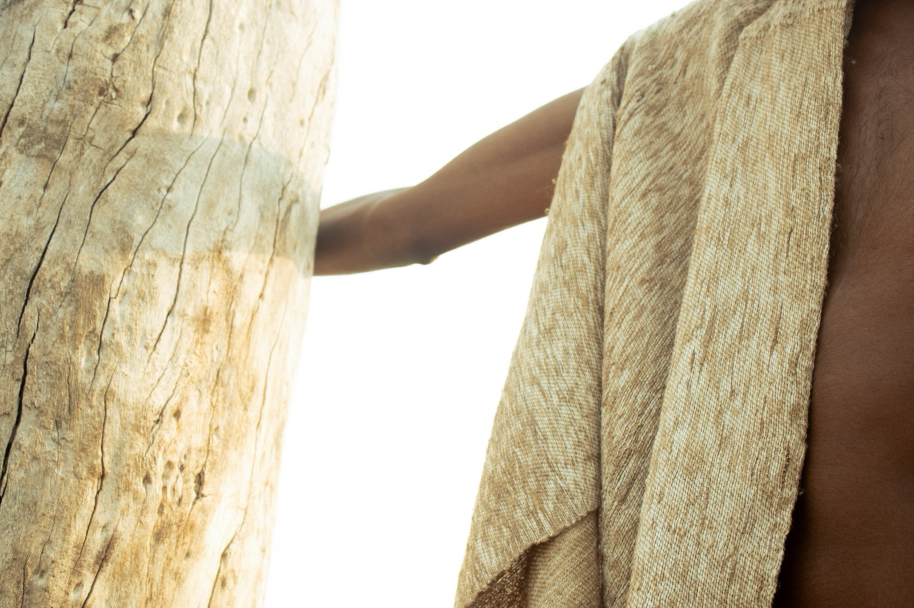
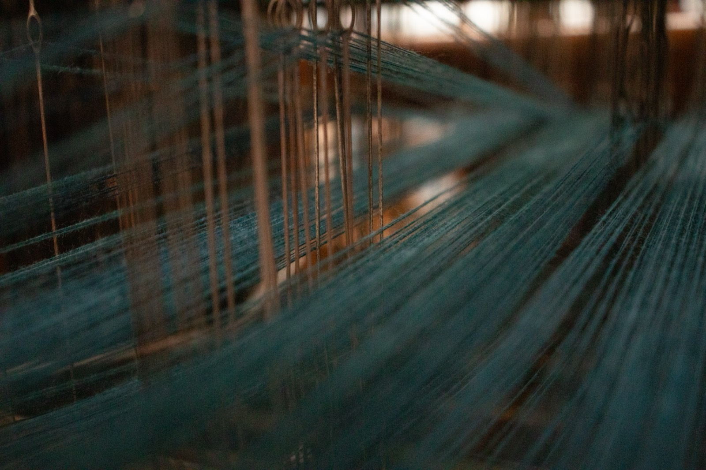
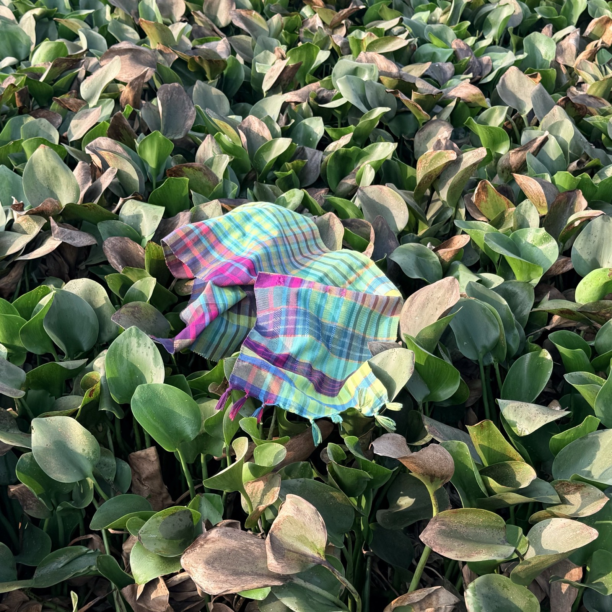
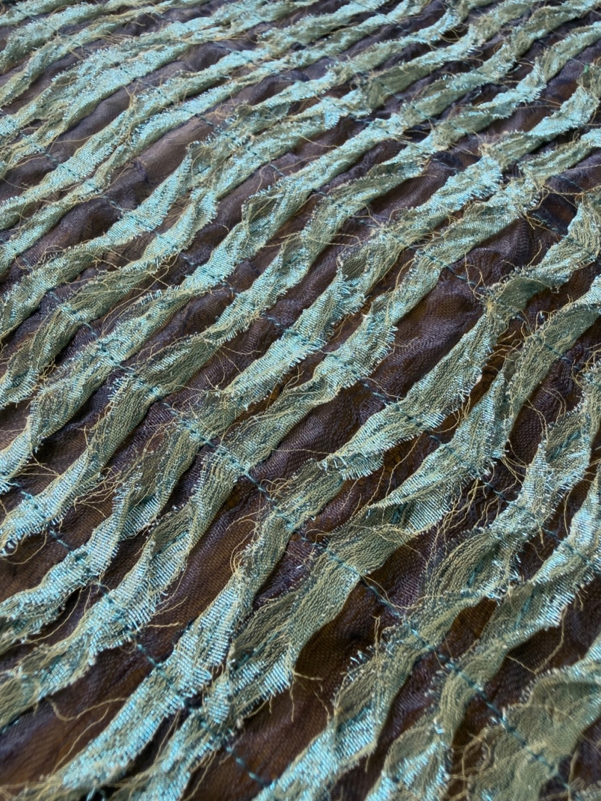
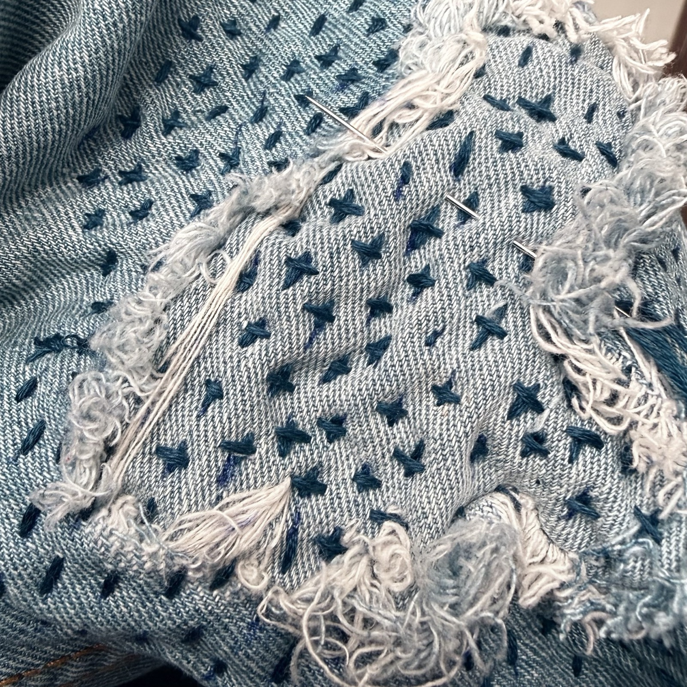
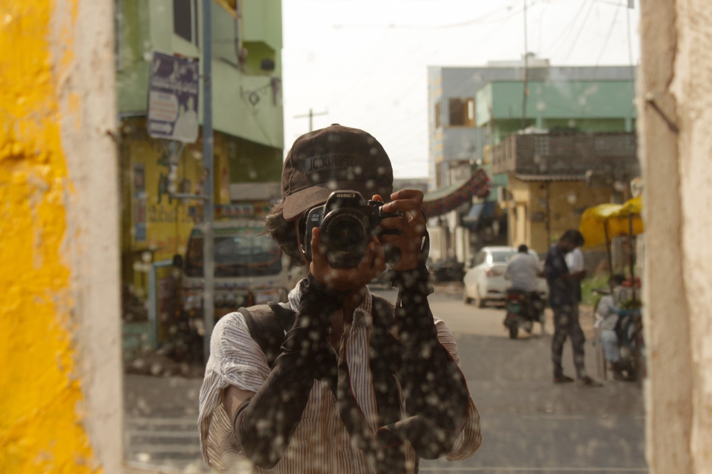
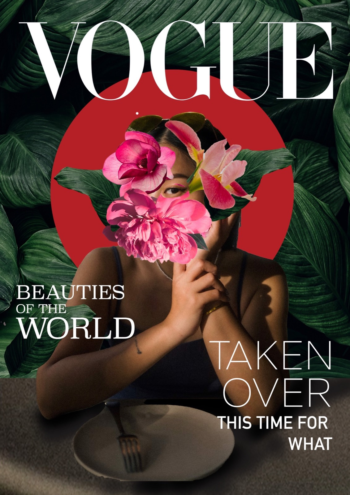
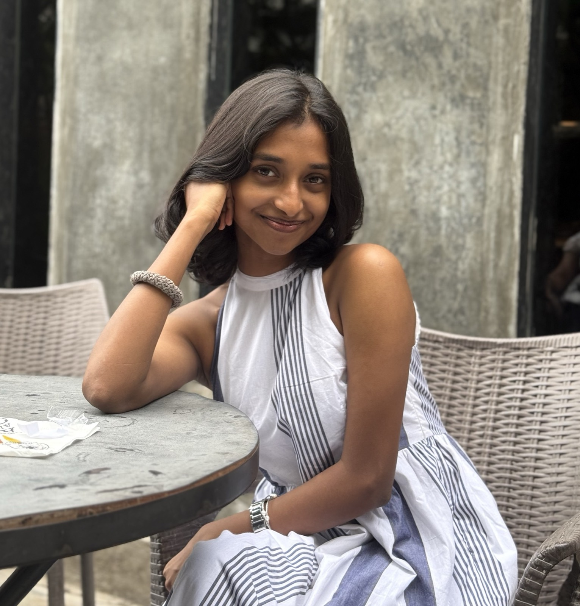

There is something deeply satisfying about watching a textile take shape one pick at a time.
Woven
Woven Design Project
A handwoven Tussar silk fabric designed to be technically accessible to the artisans who produce the silk. A parallel winding technique gradually blends gindle cotton into pure Tussar, and the fabric resolves into a zero waste garment range.
view project
Advanced Weaving
A wadded double cloth woven with zari to capture the shimmer of the blue damselfly. The concept continues from Fabric Construction, moving from hand sketch to digital draft to the final woven sample.
view project
Basic Weaving
An introduction to plain weave, twill, satin and basket weave. The greens, pinks and purples of the plum headed parakeet were translated into a stripe rhythm that runs through every sample.
view project
Surface Development
Fabric Construction
Organza and silk, layered and stitched to capture the iridescence and translucency of the blue damselfly's wings. A series of samples where choosing the right fabric mattered as much as the technique.
view project
Surface Development
An exploration of the running stitch, and how the repetition, direction, density and scale of one simple stitch can build distinctly different surfaces on the same fabric.
view project
Narrative
Narrative
A collection of lifestyle, craft and street photography.
view project
Narrative
Visual communication and layout work in Photoshop and Illustrator, including an editorial magazine cover and a movie poster redesigned using only typography.
view project
About

I am a fourth year Textile and Apparel Design student at the National Institute of Design, Andhra Pradesh. What draws me most to textiles is the patience and process behind it all.
My practice sits at the intersection of material research, craft, and design, with a particular interest in understanding what fibres can become beyond their conventional applications. Weaving and surface development are where I lose track of time.
I come from Wayanad, so wherever I am, I tend to look for the nearest hill. Flowers, long walks and unfamiliar places find their way into my work more often than I plan for.
I want to be a designer who creates with intention, where every material choice, every structure and every detail has a reason behind it.
Connect
Alma Rachel Ipe